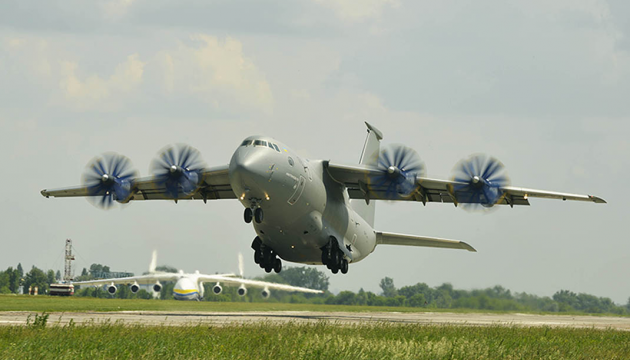

Published
ДП «АНТОНОВ» надав пропозиції щодо розвитку спільних авіаційних україно−американських проектів
3 липня 2017 року ДП «АНТОНОВ» відвідала делегація Комітету транспорту та інфраструктури Палати представників Конгресу США. Під час візиту відбулося обговорення співпраці між Україною та США в авіаційній галузі.